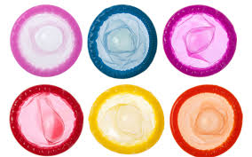
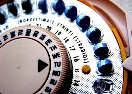
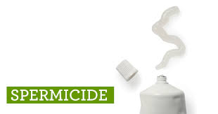
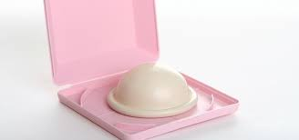
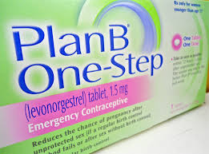

Contraceptives are tools that you can use to practive safe sex. They aid against unplanned pregnancies and contracting sexually transmitted diseases. Below is a list of many of the common forms of contraception.
A man who uses withdrawal will pull his penis out of the vagina before ejaculation.
Condoms are thin, stretchy pouches that you wear on your penis during sex.

Birth control pills are a kind of medication that women can take daily to prevent pregnancy.


Spermicide contains chemicals that stop your sperm from moving.
The ring is a small, flexible ring a woman inserts into her vagina once a month to prevent pregnancy. It is left in place for three weeks and taken out for the remaining week each month.

The diaphragm is a shallow, dome-shaped, silicon cup with a flexible rim. You insert it into the vagina and it covers the cervix.
A vasectomy is considered a permanent form of birth control for men.

The Morning-After Pill, or Plan-B, is a safe and effective way to prevent pregnancy after unprotected intercourse.